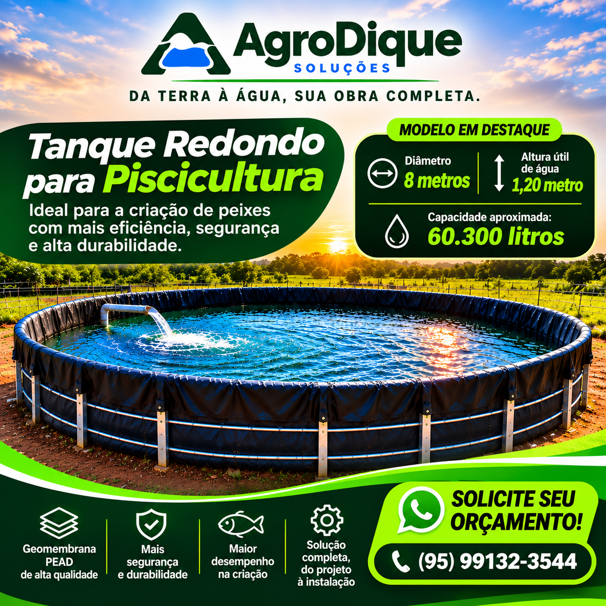

01 — Piscicultura
Tanque redondo 8 metros
Modelo compacto para quem está começando ou precisa ampliar a produção por etapas. A estrutura circular revestida com geomembrana PEAD oferece mais eficiência, segurança e alta durabilidade na criação de peixes.
- Diâmetro: 8 metros
- Altura útil de água: 1,20 metro
- Capacidade aproximada: 60.300 litros
- Revestimento em geomembrana PEAD de alta qualidade
- Solução completa, do projeto à instalação